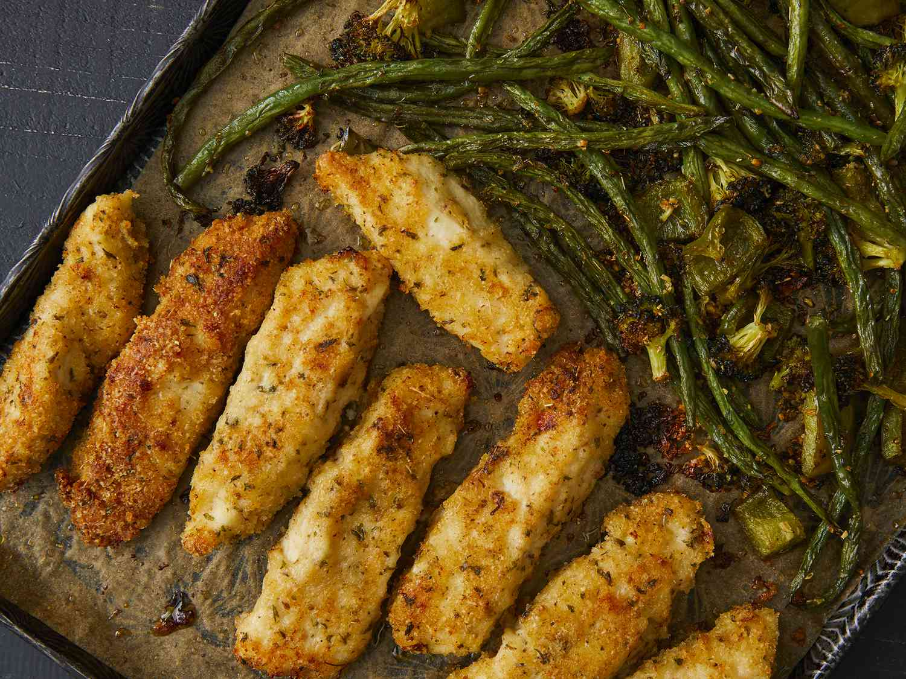

Sheet Pan Parmesan Chicken and Veggies

Quick and Easy Chicken Recipe
This extra-crispy sheet pan chicken and veggies dinner is baked on one pan and packed with flavor!
Ingredients
- 1 tablespoon dried oregano
- 1 tablespoon dried parsley
- Half teaspoon garlic powder
- Salt
- Pepper
- Fresh Green Beans
- Vegetables
- Olive Oil
- Bread Crumbs
- Parm Cheese
- 2 pounds skinless, boneless chicken breasts
Steps
- Preheat oven to 400 degrees. Line a sheet pan with parchement paper.
- Combine Seasoning in a small bowl.
- Place vegetables onto the prepared sheet pan. Drizzle with olive oil and sprinkle with half of the seasoning. Toss to coat.
- Slice chicken in strips and use blow of flower and melted butter to add bread crumbs.
- Push veggies to one side of the pan. Place chicken on the other side. Bake for 10 minutes. Flip strips and stir veggies and continue baking for an additional 10 minutes.
- Make dipping sauce of your choice.
- Remove chicken and veggies from oven and serve.